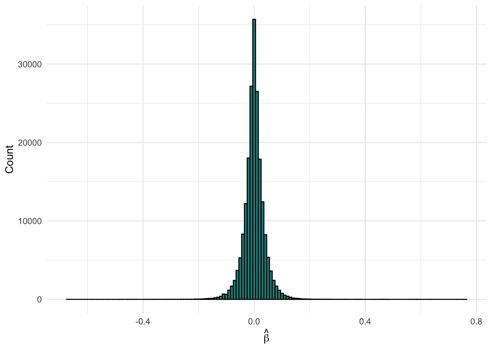
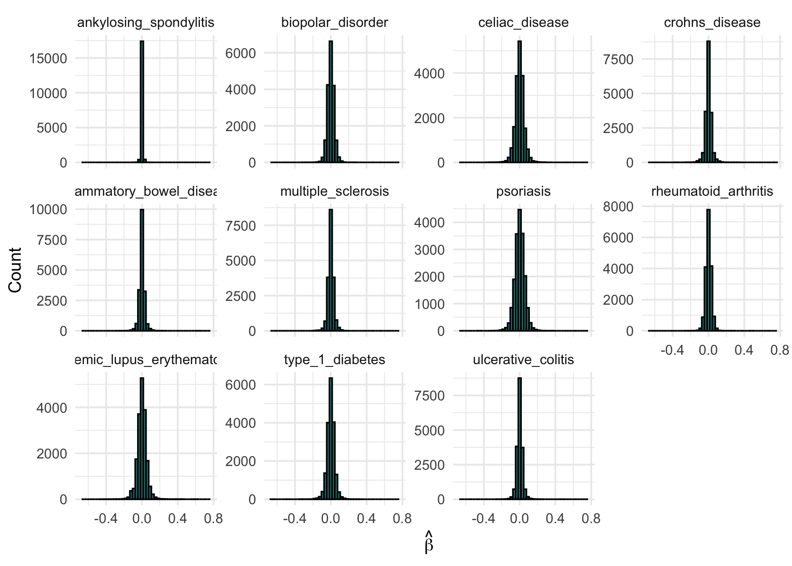
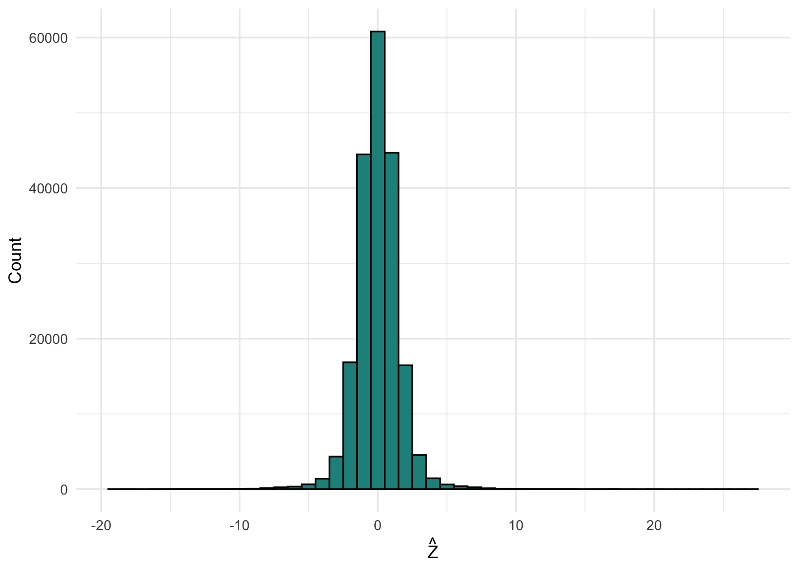
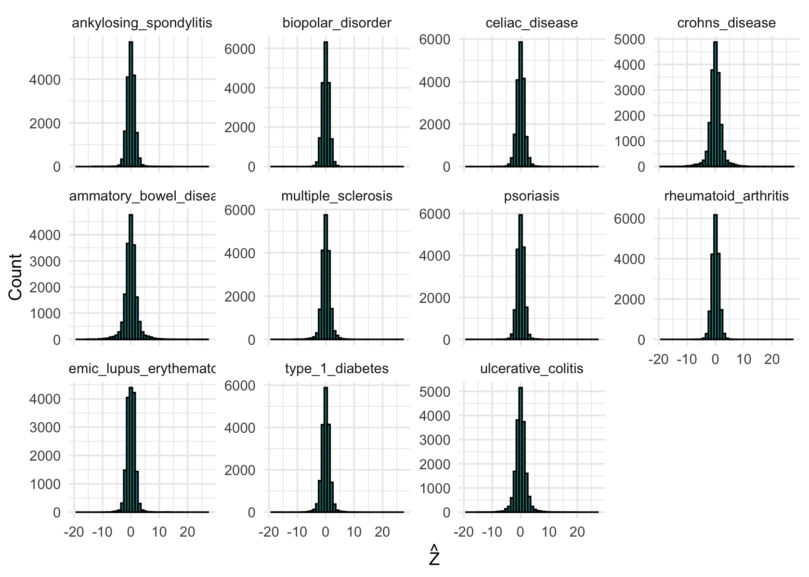
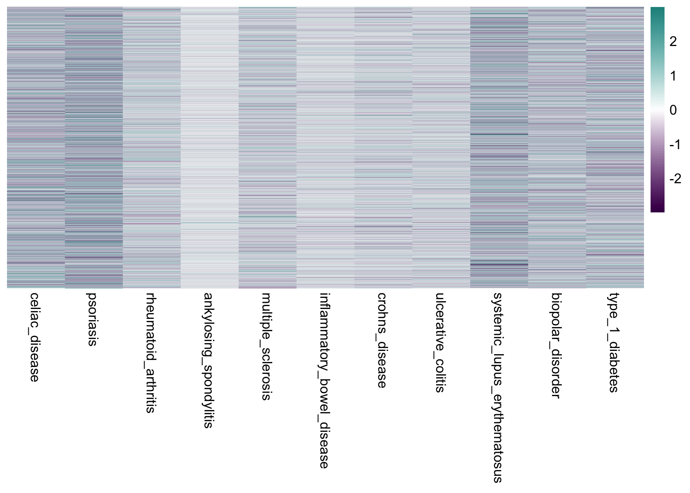

Last updated: 2025-05-01
Checks: 7 0
Knit directory: ebmf_immune/analysis/
This reproducible R Markdown analysis was created with workflowr (version 1.7.1). The Checks tab describes the reproducibility checks that were applied when the results were created. The Past versions tab lists the development history.
Great! Since the R Markdown file has been committed to the Git repository, you know the exact version of the code that produced these results.
Great job! The global environment was empty. Objects defined in the global environment can affect the analysis in your R Markdown file in unknown ways. For reproduciblity it’s best to always run the code in an empty environment.
The command set.seed(1) was run prior to running the
code in the R Markdown file. Setting a seed ensures that any results
that rely on randomness, e.g. subsampling or permutations, are
reproducible.
Great job! Recording the operating system, R version, and package versions is critical for reproducibility.
Nice! There were no cached chunks for this analysis, so you can be confident that you successfully produced the results during this run.
Great job! Using relative paths to the files within your workflowr project makes it easier to run your code on other machines.
Great! You are using Git for version control. Tracking code development and connecting the code version to the results is critical for reproducibility.
The results in this page were generated with repository version 30a211d. See the Past versions tab to see a history of the changes made to the R Markdown and HTML files.
Note that you need to be careful to ensure that all relevant files for
the analysis have been committed to Git prior to generating the results
(you can use wflow_publish or
wflow_git_commit). workflowr only checks the R Markdown
file, but you know if there are other scripts or data files that it
depends on. Below is the status of the Git repository when the results
were generated:
Ignored files:
Ignored: .Rproj.user/
Unstaged changes:
Modified: analysis/autoimmune_factors.Rmd
Note that any generated files, e.g. HTML, png, CSS, etc., are not included in this status report because it is ok for generated content to have uncommitted changes.
These are the previous versions of the repository in which changes were
made to the R Markdown (analysis/autoimmune.Rmd) and HTML
(docs/autoimmune.html) files. If you’ve configured a remote
Git repository (see ?wflow_git_remote), click on the
hyperlinks in the table below to view the files as they were in that
past version.
| File | Version | Author | Date | Message |
|---|---|---|---|---|
| Rmd | 30a211d | “John | 2025-05-01 | update |
| html | 86a0ff2 | “John | 2025-05-01 | Build site. |
| Rmd | d287a67 | “John | 2025-05-01 | update |
| html | d287a67 | “John | 2025-05-01 | update |
| Rmd | 4a0f61c | “John | 2025-05-01 | update |
| Rmd | ef8b718 | Zining Qi | 2025-05-01 | update |
| Rmd | 865d316 | Zining Qi | 2025-05-01 | update |
This analysis processes genome-wide association study (GWAS) data for multiple autoimmune diseases obtained from the GWAS Catalog. The goal is to prepare the data for subsequent analyses by:
The complete list of autoimmune diseases included can be found here.
First, we load required packages and set knitr options:
# Load required packages
library(tidyverse) # For data manipulation and visualization
library(data.table) # For efficient data reading and processing
library(pheatmap)This step is to find genetic variants that are present in all GWAS studies to enable cross-study comparisons.
# List all GWAS data files
files <- list.files(pattern = "\\.h\\.tsv$")
# Initialize with variants from first file
common_variants <- fread(files[1], select = "variant_id")[[1]]
# Iterate through files to find intersection of variants
for (file in files[c(-1, -12, -13)]) {
current_variants <- fread(file, select = "variant_id")[[1]]
common_variants <- intersect(common_variants, current_variants)
cat("Processed", file, "| Remaining variants:", length(common_variants), "\n")
}
# Save results
writeLines(common_variants, "common_variant_ids.txt")
cat("Final number of overlapping variants:", length(common_variants))Final number of overlapping variants are over 18000. Two traits were dropped because the overlapping of these two traits will be too low.
Fixme:
For each study, extract effect sizes (\(\beta\)) only for the common variants identified in Step 1.
results_list <- list()
duplicate_report <- list()
for (file in files[c(-12, -13)]) {
# Read relevant columns
gwas_data <- fread(file, select = c("variant_id", "beta", "standard_error"))
# Filter to common variants and compute Z-scores
filtered_data <- gwas_data %>%
filter(variant_id %in% common_variants) %>%
mutate(
source = gsub("\\.h\\.tsv$", "", file),
z_hat = beta / standard_error
)
# Identify and report duplicates
dup_variants <- filtered_data$variant_id[duplicated(filtered_data$variant_id)]
if(length(dup_variants) > 0) {
duplicate_report[[file]] <- data.table(
file = file,
variant_id = unique(dup_variants),
n_duplicates = table(filtered_data$variant_id)[unique(dup_variants)]
)
}
# Keep only first occurrence of each variant
results_list[[file]] <- filtered_data[!duplicated(filtered_data$variant_id), ]
}
# Combine all studies
combined_results <- bind_rows(results_list)Then, replace study identifiers with meaningful disease names for clearer interpretation.
# Create study-to-disease mapping
study_to_disease <- data.frame(
source = c("20190752-GCST000612-EFO_0001060",
"23749187-GCST005529-EFO_0003898",
"26192919-GCST003044-EFO_0000384",
"27329760-GCST003724-EFO_0000289",
"23143594-GCST005527-EFO_0000676",
"24076602-GCST005531-EFO_0003885",
"26192919-GCST003045-EFO_0000729",
"33830302-GCST90000529-EFO_0001359",
"23143596-GCST005569-EFO_0000685",
"26192919-GCST003043-EFO_0003767",
"26502338-GCST003156-EFO_0002690"),
disease = c("celiac_disease",
"ankylosing_spondylitis",
"crohns_disease",
"biopolar_disorder",
"psoriasis",
"multiple_sclerosis",
"ulcerative_colitis",
"type_1_diabetes",
"rheumatoid_arthritis",
"inflammatory_bowel_disease",
"systemic_lupus_erythematosus")
)
# Merge mapping with results
combined_results <- merge(combined_results, study_to_disease, by = "source", all.x = TRUE)
# Save processed data
save(combined_results, file = '../data/autoimmune_combined_results.RData')Before running any matrix facotorization, we want to examine the distribution of genetic effect sizes across all studies.
load('../data/autoimmune_combined_results.RData')ggplot(combined_results, aes(x = beta)) +
geom_histogram(binwidth = 0.01, fill = "#21908CFF", color = "black") +
theme_minimal() +
labs(x = expression(hat(beta)),
y = "Count")
| Version | Author | Date |
|---|---|---|
| d287a67 | “John | 2025-05-01 |
Then, compare effect size distributions across different autoimmune diseases.
ggplot(combined_results, aes(x = beta)) +
geom_histogram(binwidth = 0.03, fill = "#21908CFF", color = "black") +
facet_wrap(~ disease, scales = "free_y") +
theme_minimal() +
labs(x = expression(hat(beta)),
y = "Count")
| Version | Author | Date |
|---|---|---|
| d287a67 | “John | 2025-05-01 |
Additional, we examine the distribution of Z-scores (\(\beta\)/SE) which indicate significance of associations.
ggplot(combined_results, aes(x = z_hat)) +
geom_histogram(binwidth = 1, fill = "#21908CFF", color = "black") +
theme_minimal() +
labs(x = expression(hat(Z)),
y = "Count")
# Warning: Removed 2369 rows containing non-finite outside the scale range
# (`stat_bin()`).
| Version | Author | Date |
|---|---|---|
| d287a67 | “John | 2025-05-01 |
Also, compare Z-score distributions across different autoimmune diseases.
ggplot(combined_results, aes(x = z_hat)) +
geom_histogram(binwidth = 1, fill = "#21908CFF", color = "black") +
facet_wrap(~ disease, scales = "free_y") +
theme_minimal() +
labs(x = expression(hat(Z)),
y = "Count")
# Warning: Removed 2369 rows containing non-finite outside the scale range
# (`stat_bin()`).
| Version | Author | Date |
|---|---|---|
| d287a67 | “John | 2025-05-01 |
Fixme:
This step is to reshape data into variant-by-disease matrices for downstream analysis.
# Create variant-by-disease beta matrix
beta_matrix <- combined_results %>%
pivot_wider(
id_cols = variant_id,
names_from = disease,
values_from = beta
) %>%
as.data.frame() %>%
column_to_rownames("variant_id")
z_matrix <- combined_results %>%
pivot_wider(
id_cols = variant_id,
names_from = disease,
values_from = z_hat
) %>%
as.data.frame() %>%
column_to_rownames("variant_id")
# Save in multiple formats
#save(beta_matrix, file = "beta_matrix.RData")
#fwrite(beta_matrix, row.names = TRUE, file = "beta_matrix.csv")Fianlly, we can explore patterns and relationships between diseases through heatmap visualization.
# Heatmap of effect sizes (scaled by row)
pheatmap(beta_matrix,
cluster_cols = FALSE,
scale = 'row',
cluster_rows = FALSE,
show_colnames = TRUE,
show_rownames = FALSE,
color = colorRampPalette(c("#440154FF", "white", "#21908CFF"))(100)
)
| Version | Author | Date |
|---|---|---|
| d287a67 | “John | 2025-05-01 |
# pheatmap(z_matrix,
# cluster_cols = FALSE,
# scale = 'row',
# cluster_rows = FALSE,
# show_colnames = TRUE,
# show_rownames = FALSE,
# color = colorRampPalette(c("#440154FF", "white", "#21908CFF"))(100)
# )
sessionInfo()
# R version 4.4.3 (2025-02-28)
# Platform: aarch64-apple-darwin20
# Running under: macOS Sequoia 15.4.1
#
# Matrix products: default
# BLAS: /Library/Frameworks/R.framework/Versions/4.4-arm64/Resources/lib/libRblas.0.dylib
# LAPACK: /Library/Frameworks/R.framework/Versions/4.4-arm64/Resources/lib/libRlapack.dylib; LAPACK version 3.12.0
#
# locale:
# [1] en_US.UTF-8/en_US.UTF-8/en_US.UTF-8/C/en_US.UTF-8/en_US.UTF-8
#
# time zone: America/Chicago
# tzcode source: internal
#
# attached base packages:
# [1] stats graphics grDevices utils datasets methods base
#
# other attached packages:
# [1] pheatmap_1.0.12 data.table_1.17.0 lubridate_1.9.4 forcats_1.0.0
# [5] stringr_1.5.1 dplyr_1.1.4 purrr_1.0.4 readr_2.1.5
# [9] tidyr_1.3.1 tibble_3.2.1 ggplot2_3.5.2 tidyverse_2.0.0
#
# loaded via a namespace (and not attached):
# [1] sass_0.4.10 generics_0.1.3 stringi_1.8.7 hms_1.1.3
# [5] digest_0.6.37 magrittr_2.0.3 evaluate_1.0.3 grid_4.4.3
# [9] timechange_0.3.0 RColorBrewer_1.1-3 fastmap_1.2.0 rprojroot_2.0.4
# [13] workflowr_1.7.1 jsonlite_2.0.0 whisker_0.4.1 promises_1.3.2
# [17] scales_1.4.0 jquerylib_0.1.4 cli_3.6.5 rlang_1.1.6
# [21] withr_3.0.2 cachem_1.1.0 yaml_2.3.10 tools_4.4.3
# [25] tzdb_0.5.0 httpuv_1.6.15 vctrs_0.6.5 R6_2.6.1
# [29] lifecycle_1.0.4 git2r_0.36.2 fs_1.6.6 pkgconfig_2.0.3
# [33] pillar_1.10.2 bslib_0.9.0 later_1.4.2 gtable_0.3.6
# [37] glue_1.8.0 Rcpp_1.0.14 xfun_0.52 tidyselect_1.2.1
# [41] rstudioapi_0.17.1 knitr_1.50 farver_2.1.2 htmltools_0.5.8.1
# [45] labeling_0.4.3 rmarkdown_2.29 compiler_4.4.3